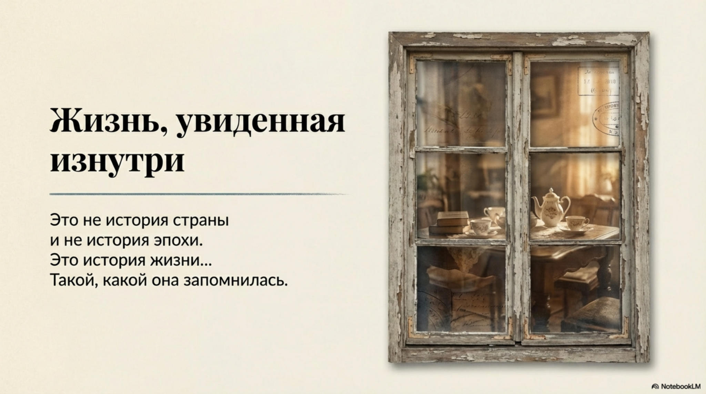

ИСТОРИЯ 1: ДОБРОВОЛЬНЫЙ ПУТЬ ВО МРАК НЕБЫТИЯ
ИСТОРИЯ 2: ИСТОРИЯ ЛЮБВИ И ИЗМЕНЫ
ИСТОРИЯ 3: МАСЛЯНАЯ БИТВА
ИСТОРИЯ 4: ПОЛЁТ И ОЧЕРЕДЬ
ИСТОРИЯ 5: ДЕТСКАЯ ДОВЕРЧИВОСТЬ
ИСТОРИЯ 6: КАК ТЕСЕН МИР
ИСТОРИЯ 7: УТРЕННИЙ ПЕРЕПОЛОХ